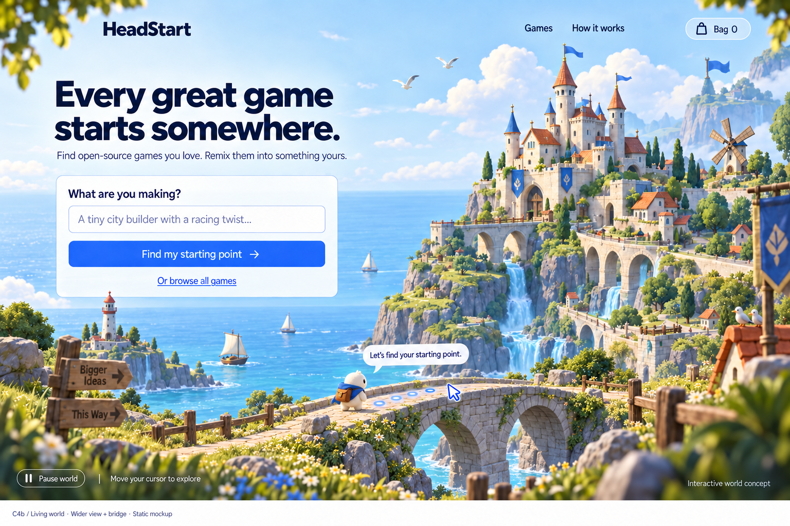
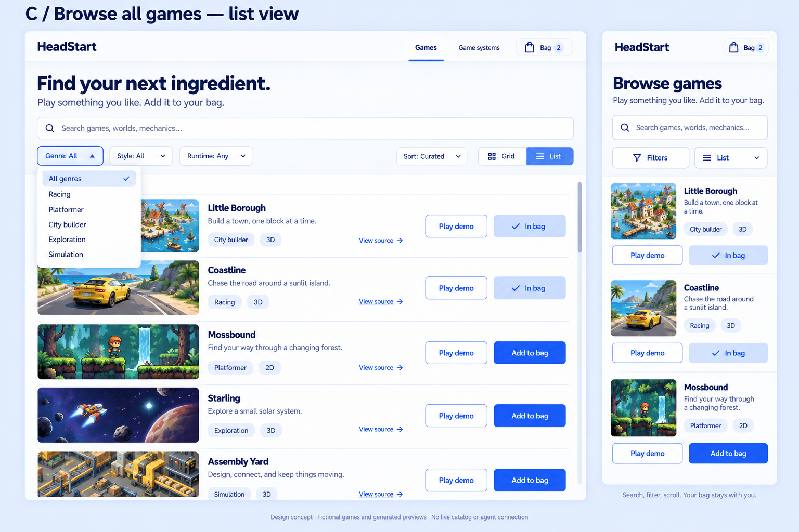
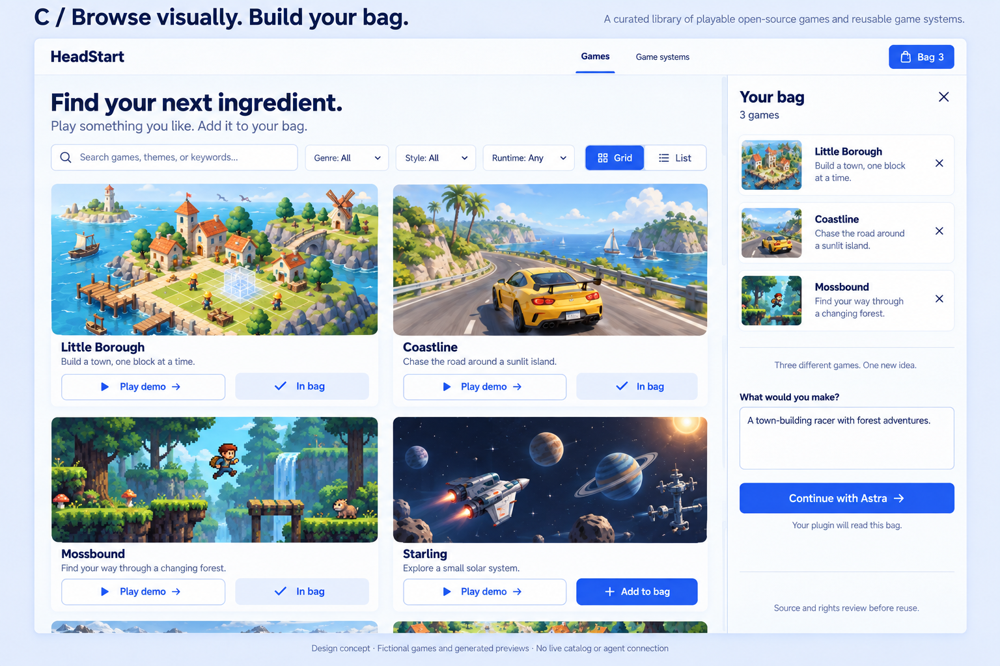
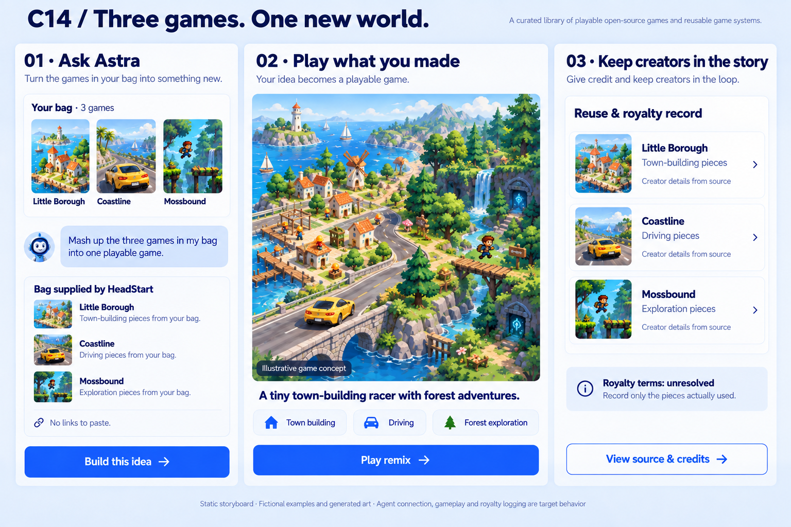
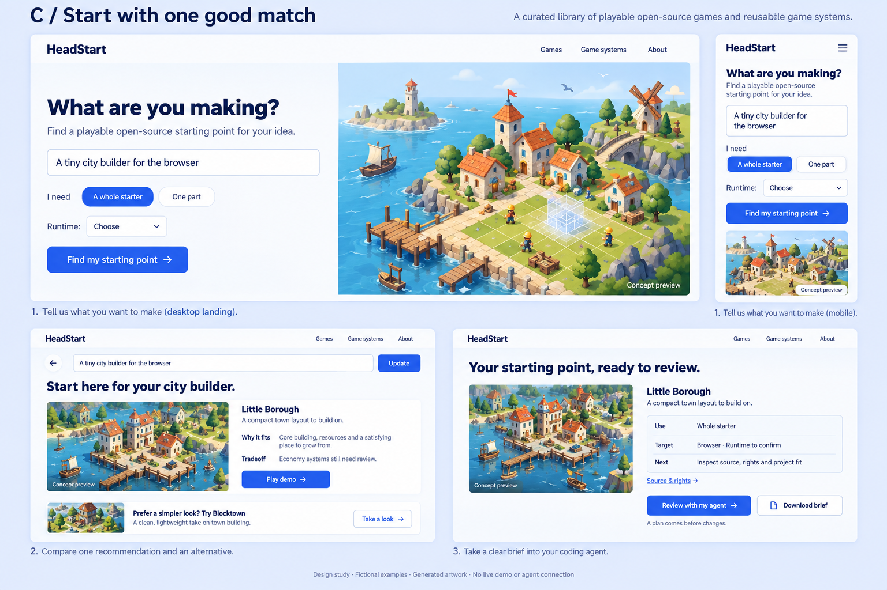
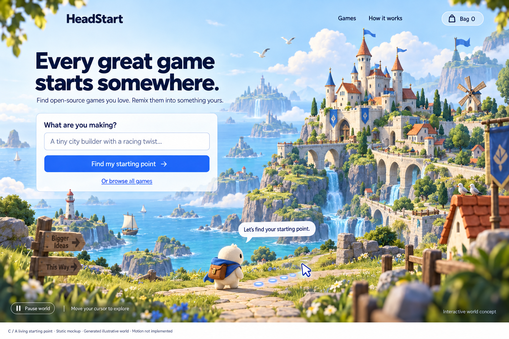
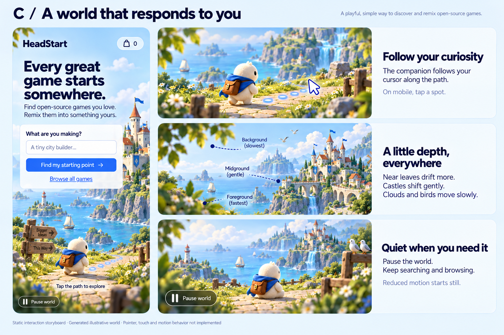

04 / 21–29s
Ask Astra once.
“Mash up the three games in my bag into one playable game.”
The MCP tool/plugin supplies the selected bag and brief automatically. Show the three sources arriving in the developer's existing agent.
Selected direction / C4 living world
Find three games you love. Ask Astra to remix them. Play something yours.
01 · 0–6 seconds

Action The companion takes a few steps along the bridge. The user chooses “Or browse all games”. The prompt, navigation and bag remain steady.
World direction Soft foreground leaves, gently drifting birds and boats, flowing waterfalls. Pause world and reduced-motion support keep discovery comfortable. This board is static.
02–03 · 6–21 seconds


The games pictured are fictional placeholders. The recorded demo will need real reviewed games and authentic gameplay captures.
04–07 · 21–60 seconds

04 / 21–29s
“Mash up the three games in my bag into one playable game.”
The MCP tool/plugin supplies the selected bag and brief automatically. Show the three sources arriving in the developer's existing agent.
05 / 29–40s
A brief edit shows inspection, adaptation and actual checks. Label it “Build sequence compressed.” Make the contribution from each game understandable.
06 / 40–53s
The longest uninterrupted shot: drive, explore and grow the town in one coherent loop, where supported by the validated implementation. Show real input and response.
07 / 53–60s
Show the automatically recorded creators and pieces actually reused. Link source and credits. Display unresolved royalty terms honestly. End beside the playable result.
The chosen C family



{kind=link}
{kind=link}
{kind=link}